Tutorial: How to Complete an Assessment¶
This guide walks through a typical assessment workflow in VarCat.
1. Open an Assessment¶
From the home page, open an assessment by:
- a) Entering a variant + disease pairing in the form shown below, or
- b) Selecting a previously-created assessment from the table
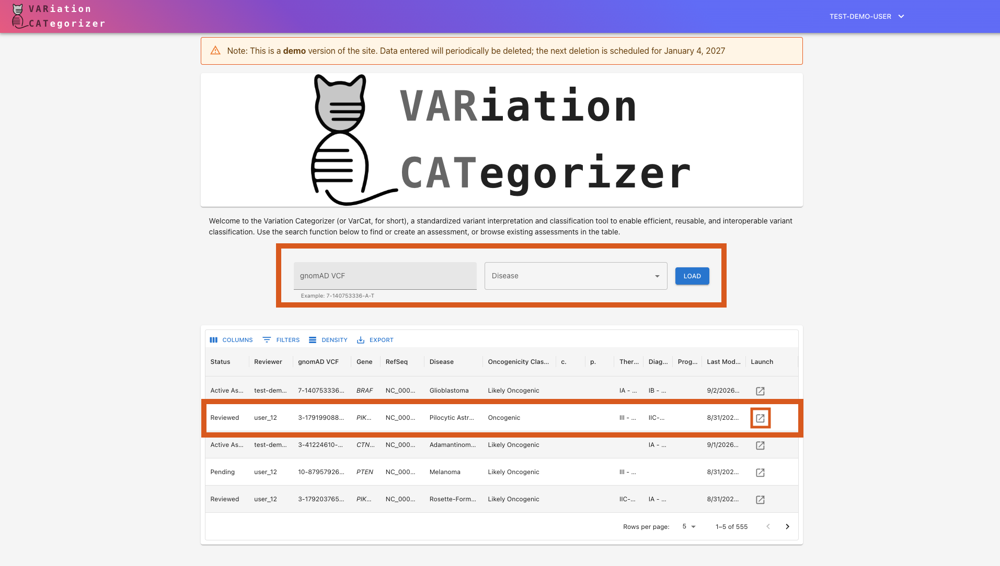
2. Change the Status to Active¶
An assessment must be Active before you can edit it.
Use the status control in the upper right corner to move through the status lifecycle until you reach Active:
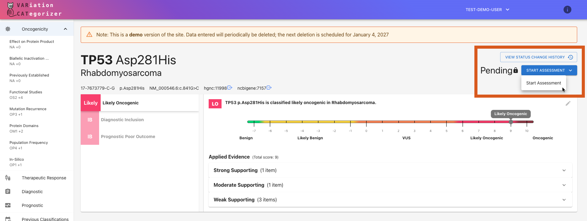
Only one user can edit an assessment at a time. If it is currently checked out by another user, you will need to overtake it:
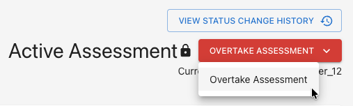
3. Review the Oncogenicity Assertion¶
VarCat creates an initial oncogenicity assertion automatically. Look it over and update it as needed:
A) Audit Each Section's Evidence¶
Oncogenicity evidence is organized into sections by type (i.e., Evidence Lines). Each Evidence Line section has:
- Any evidence items of the titular type
- A code indicating the significance of the findings
- A score indicating the strength of the findings
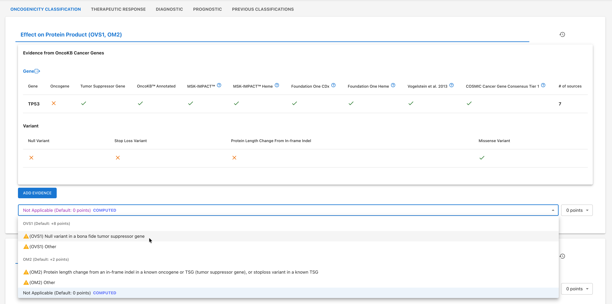
Review each evidence section and update it as needed. You can:
- Curate your own additional evidence manually (via the "Add Evidence" button)
- Revise the evidence line's auto-selected code (via the code selection dropdown)
- Change the evidence line's auto-computed score (via the score selection dropdown)
- Review the evidence line's history (on the section's history tab, accessed via the "rewind" icon in the upper-right corner of the section - see image below)
History Tab Button:
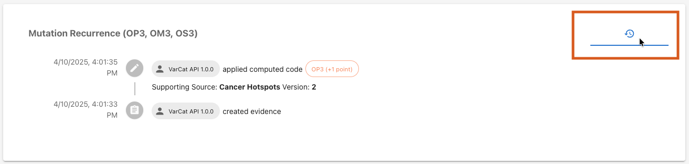
B) Validate the Assertion's Overall Score¶
The oncogenicity assertion's overall score is the sum of all individual sections' scores. However, you may manually override this if necessary by clicking the pencil icon in the upper right-hand corner of the summary modal:
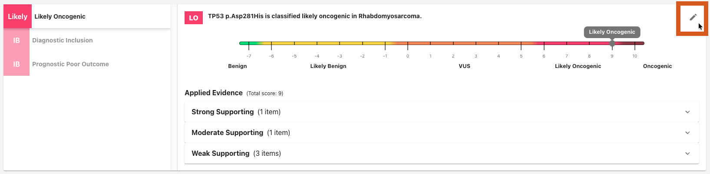
4. [Optional] Add or Review Other Assertions¶
If needed, add or review therapeutic, diagnostic, and/or prognostic assertions.
Use the Summary Modal to view assertions that already exist:
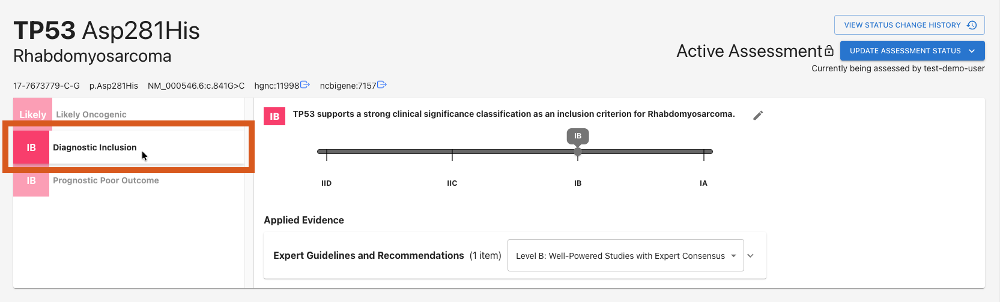
Click the corresponding evidence tab below to work on an existing assertion and/or create a new assertion. If no assertion exists yet for the type of evidence you're viewing, applying the first piece of evidence will create it automatically.
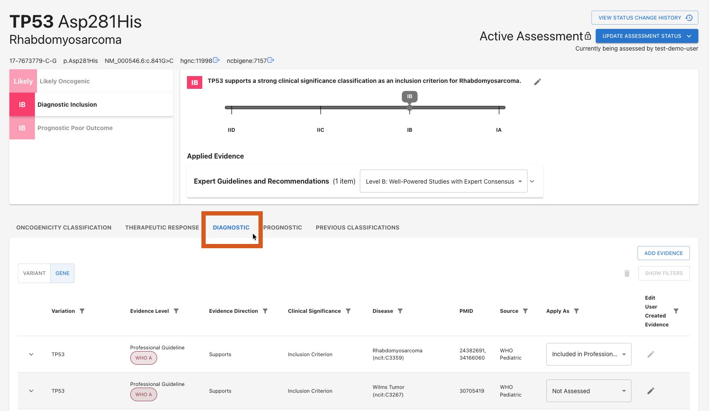
Toggle between variant-level and gene-level evidence where available:
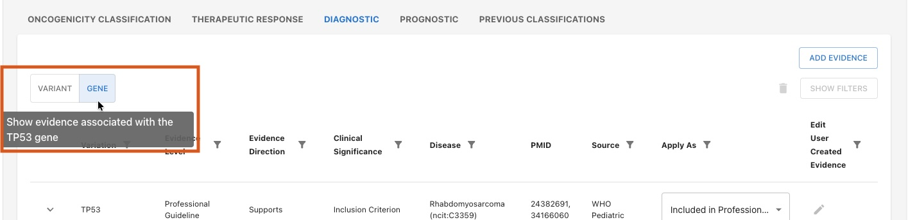
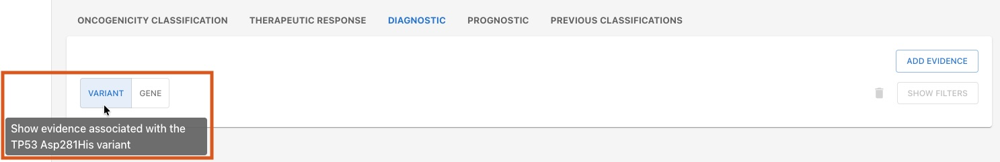
If needed, add new evidence with the Add Evidence button.
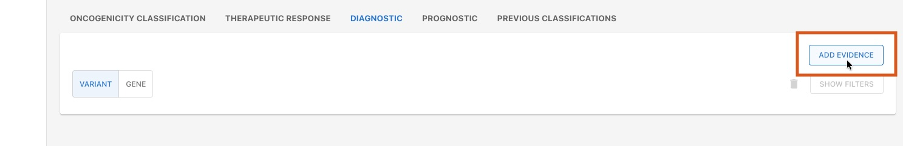
Apply evidence with the Apply As dropdown, if needed.
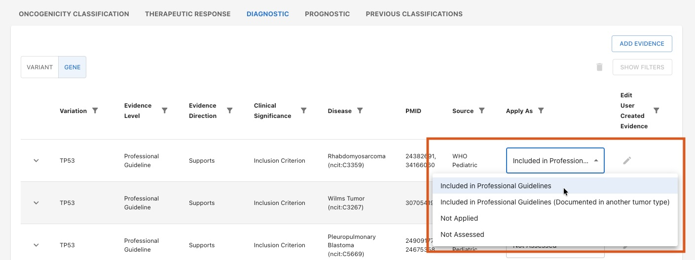
After evidence is applied, the summary modal updates to reflect the assertion's current state. The assertion's overall classification and score are determined by the highest ranked evidence that is currently applied.
You can manually adjust the applied strength for a evidence line grouping from the summary modal.
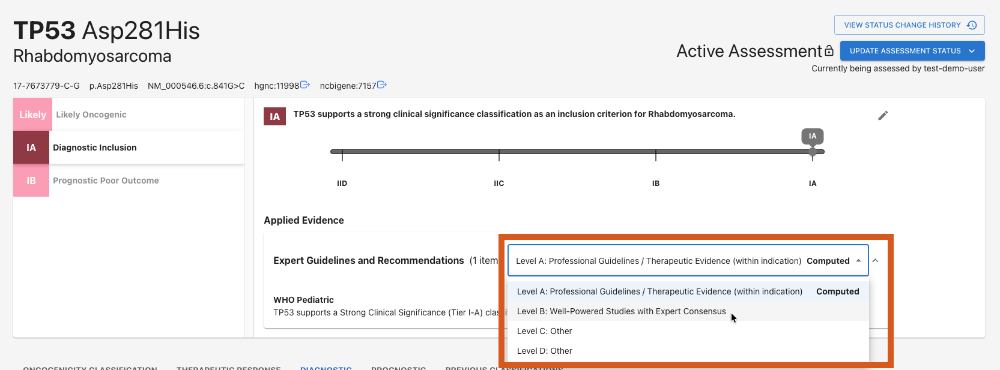
You can also manually override the classification for the entire assertion as a whole by clicking the pencil icon in the upper right corner of the summary modal, just like Oncogenicity assertions.
5. Change the Status to Awaiting Review¶
When the assessment is complete, use the status control button to select "Ready for Review" to update the assessment's status to Awaiting Review. It is now ready for final review and sign-off.
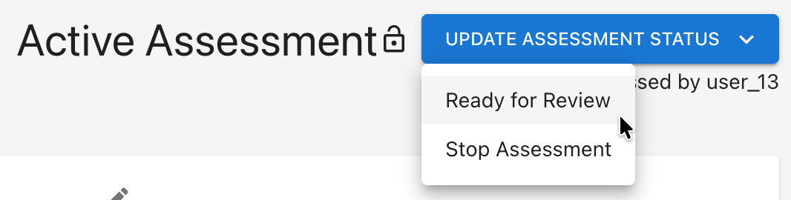